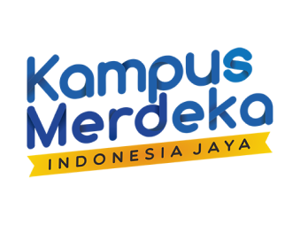
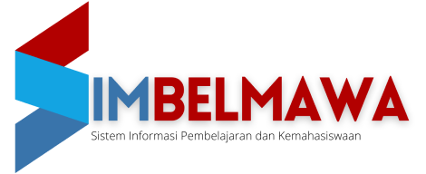
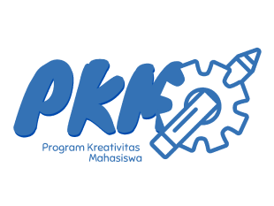
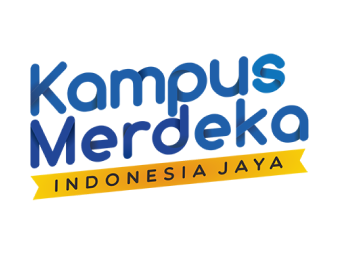
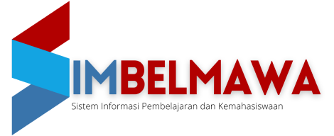
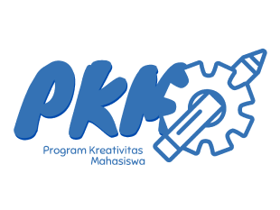
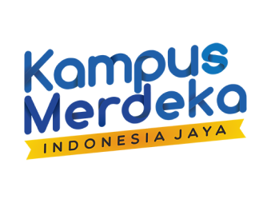
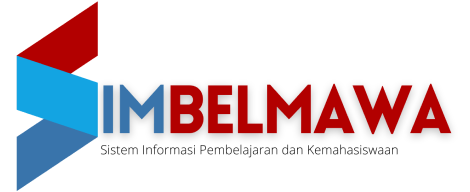
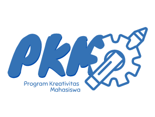

Supported by
 





BIT.
Get Started



Tumor otak adalah kondisi abnormal di mana sel tumor berkembang di dalam otak, mengganggu fungsi normal sel saraf dan seringkali berakibat fatal. Setiap tahun, ribuan orang menderita dan meninggal karena penyakit ini, menuntut penanganan segera dan efisien. Citra MRI menjadi pilihan utama untuk diagnosis, meskipun interpretasinya masih memakan waktu. Oleh karena itu, diperlukan sistem otomatis untuk diagnosis yang cepat dan akurat.
Teknologi citra medis, khususnya Deep Learning dengan CNN seperti ResNet, telah membawa kemajuan besar dalam interpretasi citra medis. ResNet terkenal karena kemampuannya dalam mengatasi pemudaran gradien dan meningkatkan akurasi deteksi. Histogram Equalization, sebuah teknik preprocessing, juga digunakan untuk meningkatkan visualisasi fitur data pada citra MRI.
Dengan menggabungkan ResNet dan Histogram Equalization, sebuah sistem pendeteksi tumor otak telah dikembangkan. Sistem ini memberikan diagnosis yang akurat, cepat, dan efisien, berpotensi membantu dalam pengobatan dan perawatan pasien. Selain itu, sistem ini memberikan wawasan tentang peran AI dalam kedokteran dan menjadi dasar untuk penelitian lebih lanjut.
Rumusan masalahnya adalah bagaimana merancang sistem deteksi tumor otak menggunakan ResNet dan Histogram Equalization untuk meningkatkan akurasi diagnosis, dengan tujuan mengembangkan model yang lebih efektif dan akurat.
Manfaatnya termasuk peningkatan akurasi deteksi tumor, kontras citra yang lebih baik, pengurangan kesalahan diagnosis, dan peningkatan efisiensi dalam interpretasi citra. Selain itu, sistem ini dapat menjadi referensi untuk pengembangan teknologi deteksi tumor otak yang lebih canggih di masa depan dan memberikan pemahaman yang lebih dalam tentang penyakit ini.
Luarannya mencakup laporan kemajuan program, laporan akhir implementasi aplikasi, prototipe sistem deteksi tumor otak berbasis web, dan akun media sosial.


created with
Offline Website Builder Software .